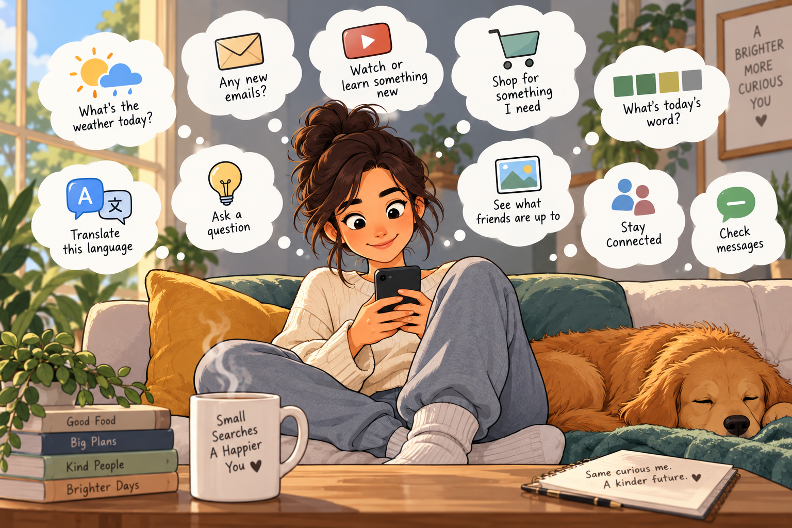

Stillkeep Essay
The Things We Search Every Day (And the One Search You Forgot Today)
Every single day, humans make billions of searches online.
We check the weather before stepping outside and scan Gmail to start the morning. We open YouTube to learn something new, browse Amazon for something we need, or solve the daily Wordle over coffee. We turn to Google Translate to understand another language, brainstorm ideas with ChatGPT, and check Instagram, Facebook, and WhatsApp to find people, messages and conversations — or simply pass the time.

These everyday searches are remarkable. They keep us connected, curious and navigating the modern world in seconds.
But while we search the internet for almost everything, there’s one search we rarely think about:
Looking back through our own story.
- The golden light on your kitchen table on an ordinary Tuesday.
- The spontaneous rainy walk you almost forgot happened.
- The small, beautiful moments buried beneath thousands of photos in your camera roll.
Finding a forecast, video, message or answer can take seconds. But take 60 seconds today to look back at this exact date last year — to see where you were, who you were with and what made you smile.
Sometimes the things most worth finding aren’t somewhere on the internet.
They’re already yours.
Go search your own life on iPhone with Stillkeep today.